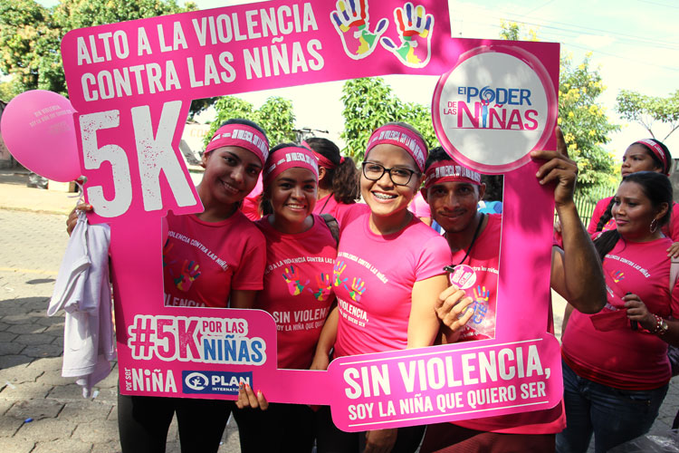
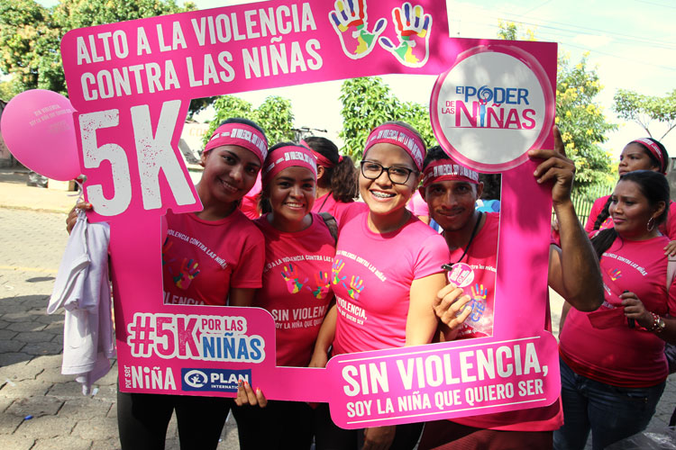
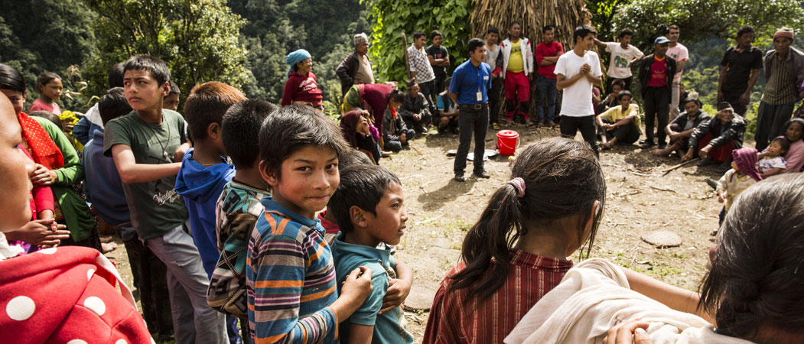
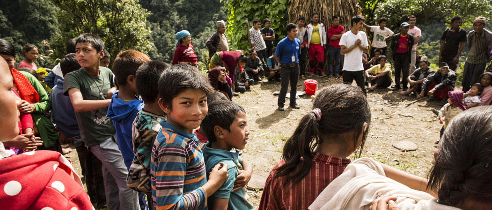
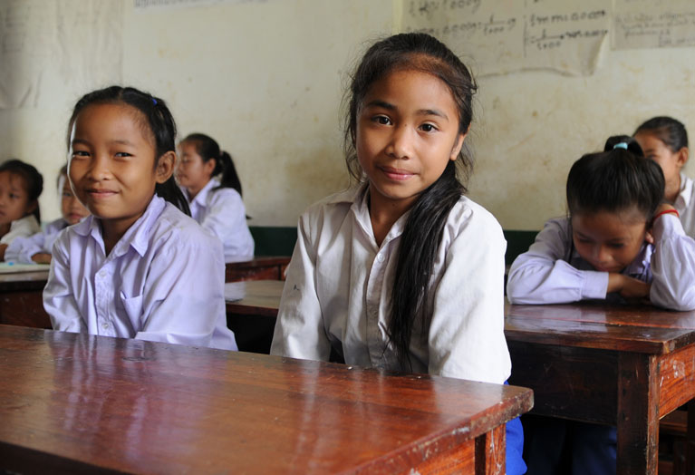
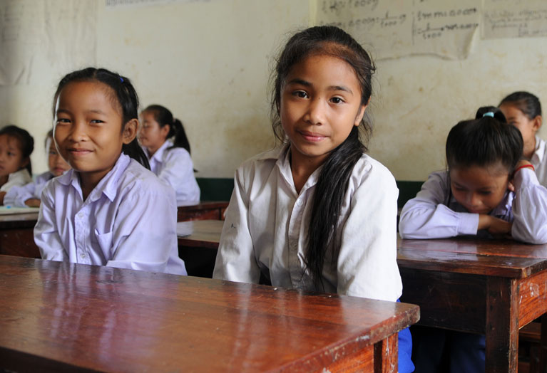
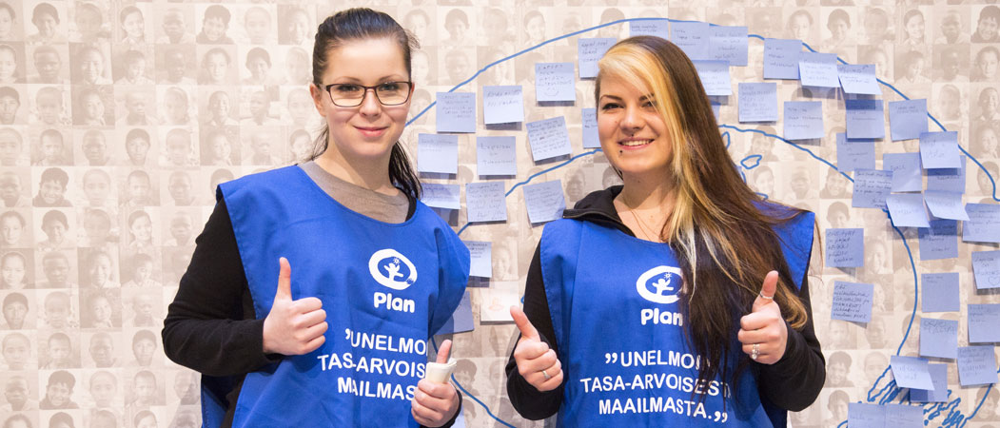
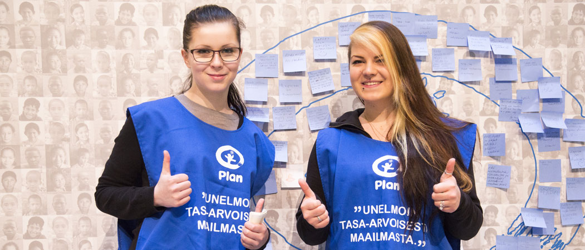

Plan International Finland promotes the rights of girls who are in the weakest position globally. We are Finland’s leading expert on their situation.
In 2015, we increasingly highlighted girls as the focal point of our efforts. As we work to improve the daily lives and learning opportunities of children, it is important to focus particularly on the position of girls. We believe that promoting gender equality is an essential aspect of eliminating poverty. The UN Sustainable Development Goals can’t be achieved without girls. By working with our private donors and other funding partners to support the education of girls in developing countries we can put a stop to the cycle of poverty.
Promoting girls’ rights was a visible aspect of our day-to-day operations throughout the year. We also carried out various campaigns and events to call attention to the position of girls in developing countries. Of particular significance for us was the International Day of the Girl, 11 October, which was originally a Plan initiative. We also promoted girls’ rights when Plan Finland, Plan Sweden and Plan Norway demanded the right to safe schooling for girls in the My Law campaign, when Plan joined the SuomiAreena event to talk about its work against genital mutilation and child marriages, when leading artists performed at the Wings to Fly concert, when Kapua campaign participants scaled a mountain in Bolivia, when Seppälä challenged their customers to support girls’ schooling and when our Secretary General accepted a ski jumping challenge in Salpausselkä to promote girls’ rights.
In addition to these examples, our year included a tremendous amount of other diverse, successful and visible work that is described in more detail in this Annual Review.
Significant progress has already been made in improving the position of girls, but there is much more work to be done. With this in mind, we will continue our determined daily efforts next year.
Promoting girls’ rights was a visible aspect of our day-to-day operations throughout the year.
We turned our Because I am a Girl campaign into a global movement to empower girls to claim their rights. Our new goals related to girls’ rights were published in May 2016 in Copenhagen, at the Women Deliver Conference focused on promoting the rights of girls and women. We made a commitment to build new strategic partnerships and projects to make sure that girls’ voices are heard and achieve greater visibility for girls’ issues. We also want to ensure that the issues that are important in girls’ lives are prominent in political decision-making and we demand new commitments and investments in the future of girls.
The UN officially approved the Sustainable Development Goals at its General Assembly in September 2015. Supported by Plan, the representatives of girls went to the UN to appeal to world leaders to realise the goal of gender equality. Working with partners, Plan International launched an independent data tracker to ensure governments deliver on promises made through the Sustainable Development Goals for 2030. The tracker will measure progress made in issues that concern the lives of women and girls. Our partners are the International Women’s Health Coalition, KPMG, ONE Campaign and Women Deliver.
We also worked to promote legislative reforms and influence public opinion. In Guatemala, for example, our three-year advocacy effort led to the legal age of marriage being raised from 14 to 18 years.
Underpinning all of our work in the present is our new purpose that will define our future. Our new purpose inspires even greater focus and ambition in our work so we can really transform the lives of girls, the world’s most marginalised and excluded group. In future annual reviews, expect to see clear evidence of the changes we are helping to bring about in the position of girls.
In Guatemala, we played an important role in making child marriages illegal.
The International Day of the Girl was celebrated in many visible ways around the world. Many famous landmarks were lit up pink. In Latin America, girls appealed to national decision-makers to protect their rights. Downtown Oslo turned into a gigantic classroom. Thousands of people participated in marches and festivals. More than a million people watched our film You Haven’t Seen the Best of Us Yet.
We worked with our volunteers to celebrate the Day of the Girl in many wonderful ways across Finland.


 

Plan is a strong player and respected expert in promoting children’s rights in humanitarian crises and disasters.
Plan International Finland carried out humanitarian work as part of the global Plan network in 2016. In 2016, Plan International spent EUR 134 million on humanitarian work and provided assistance in 67 disasters. Many of them were related to various natural disasters and extreme weather brought about by climate change.
Our disaster relief work is aimed at ensuring that the basic needs, protection and schooling of children are secured in disaster situations. Preparing and foreseeing disasters are a significant aspect of our work. We already operate in many areas ravaged by disasters. Our presence makes the delivery of aid faster and more efficient. In the Nepal earthquake, for example, 115,000 children quickly received extensive assistance from Plan International.
During the year, Plan International Finland helped people in Ethiopia who are suffering due to a food crisis brought about by extended drought. Our help reached more than 15,000 people, the majority of whom were malnourished children under the age of five. We also helped pregnant and breastfeeding mothers. We trained more than 200 professionals and worked to prevent the spread of infectious diseases.
A large number of people escaped from Syria, Iraq and other conflict-ridden countries in the Middle East and Africa last year. The lion’s share of the refugee burden was borne by countries that are much poorer than Europe. We also engage in disaster relief work in these countries. For example, during the past year, we helped refugee children in Egypt who have escaped the war in Syria, as well as refugees from the political crisis in South Sudan at refugee camps in northern Uganda, in cooperation with Unicef. In Jordan, we established an early childhood education centre whose work will be supported by funding from the Finnish Ministry for Foreign Affairs in 2017.
We engage in disaster relief in close cooperation with the other Nordic countries. During the past year, the disaster teams in Finland, Sweden and Norway were combined to facilitate the sharing of knowledge and expertise between the offices.
We helped children and their communities in 67 disasters.
 

Plan provides many types of assistance to children at refugee camps who have been forced to flee from their homes and countries. We provide emergency assistance in the form of food, shelter, clean water and personal hygiene products. Making sure these basic necessities are in order is essential at refugee camps. Tens of thousands of people living in close quarters under exceptional conditions creates an environment that is vulnerable to problems such as the spread of disease. For example, the people living in the Minawao refugee camp, the largest in Cameroon, lacked access to proper toilets for a long time, and many lives were lost to cholera caused by poor hygiene. When Plan built proper toilets in the camp with hand washing stations, the cholera outbreak ended.
In addition to looking after children’s health and nutrition, it is important to give them the opportunity to return to a safe daily routine. Recognising this, we organise temporary schools and preschools as well as safe daycare centres for children in refugee camps. At the Kule refugee camp in Ethiopia, for example, Plan has helped nearly 11,000 children go to school and 1,500 children have started preschool. At the Kule camp, temporary school structures have also been replaced with permanent school buildings.
In difficult circumstances, it is important to protect children—and girls in particular—from violence, sexual abuse and human trafficking. For children who have been left on their own after family members have ended up in different camps or even different countries, Plan works to reunite the family members. We also provide psychosocial support to children who have had to live through crises.

We engaged in development cooperation in 51 programme countries during the year. Projects funded by Plan International Finland
Our work included projects in the areas of education, health, water and sanitation, protection, economic safety, disaster relief, the participation of children and young people and sexual and reproductive health. The focus of our work was on Africa and Asia. Our programme work is focused on three themes: education and early childhood education, child protection and youth employment.
In recent years, we have successfully sought funding for our highly valued long-term project work from a number of institutional sources, such as the European Union. During the year, we signed new project agreements in Mozambique, Indonesia and Cameroon for a total of EUR 1.8 million. We completed two EU-funded projects to strengthen the position of girls in Indonesia and Ethiopia. In Vietnam, we are continuing a project funded by UN Women and, in Ethiopia, we are continuing a project for which Unicef provided additional funding for Plan.
The early childhood education projects of Plan International Finland were focused on supporting the development of children aged 0–8 years. We placed particular emphasis on improving the opportunities for participation of children from ethnic minorities and disabled children. We implemented projects focused on health and nutrition in Bolivia, Ethiopia, Kenya, Mozambique, Pakistan, Uganda and East Timor. In 2015, we established or supported a total of 480 early childhood education centres in these countries. Our work reached nearly 37,000 children and some 30,000 parents and guardians.
Our child protection projects in the Dominican Republic, Ethiopia and Togo were focused on preventing violence and harmful traditional practices against girls and women, as well as promoting the community participation opportunities of disabled children. We also supported a regional project in Asia. The projects reached more than 28,000 children and nearly 15,000 adults.
Disabled children also have the opportunity to be active participants in the life of their communities.
It is estimated that there are 93–150 million disabled children in the world. In developing countries, disabled children are often in a very difficult position and they may be almost completely excluded from the life of the community.
One of Plan’s projects surveyed attitudes towards disabled children in West Africa in 2013. The attitudes were found to be very negative, often due to incorrect assumptions and beliefs. The participation of disabled children in school work, in particular, was widely opposed. Disabled children also often suffered from physical and mental violence. In many cases, girls were also subjected to sexual abuse and neglect. Disabled children had an obvious need for protection and better opportunities to participate in the life of the community.
Frank Velthuizen, a Senior Specialist on Inclusion and Disability at Plan International Finland and Plan International Ireland, has worked to improve the position of disabled children in our programme countries for two years. He continuously develops new practical tools to support work with disabled people and collects empirical data to improve the position of children. The progress made in his work are directly visible in Plan’s international operations, as the goal is to share best practices throughout the organisation.
In 2015, Plan and UNESCO launched projects in Togo and Ethiopia to develop tools to change attitudes to be more positive and to facilitate participation in community life. Through easily understandable illustrations and texts, the Plan2inclusivize materials shed light on the causes of disabilities as well as the difficulties and attitudes that disabled children come across in their daily lives. The method has given children better opportunities to go to school and participate. Disabled children have been able to make their voices heard in matters concerning themselves and they’ve also had the chance to be involved in popular children’s games. This boosts their confidence and supports their physical rehabilitation. At the same time, non-disabled children and disabled children get to be more involved with each other.
It is estimated that our Plan2inclusivize method will help more than 900 disabled boys and girls in Togo and Ethiopia in the next few years. This “toolbox” for working with disabled people was completed during the year and, in the near future, it will be adapted to different cultures and languages. There are also plans to expand the use of the tools to Latin America and Asia. Achieving a permanent change in attitudes gives disabled children the opportunity to be active participants in the life of their communities.


Every child is unique: everyone deserves respect, esteem, empathy and equality.
 

Our education projects provided better learning opportunities and school access for girls and boys. We have particularly improved the quality of education among ethnic minorities and those who live in remote areas. As part of our work, we have developed new models for intercultural learning and participatory school administration. During the year, we improved the schooling opportunities of children from ethnic minorities in Cameroon and Laos. We also improved the position of socially excluded children in Uganda. Our work directly reached more than 5,700 children and over 5,700 parents.
There are some 500 million unemployed or underemployed young people in the developing world. Unemployment is particularly common among girls and women. Plan International supports the vocational training of young people in more than 40 countries. In our employment projects during the year in the Dominican Republic and Pakistan, young women in particular learned vocational and technical skills as well as entrepreneurship. We also increased the number of our youth forums and networks.
Cuts to the development cooperation budget made by the Finnish government led to a savings need of EUR 2.5 million at Plan. The Finnish Ministry for Foreign Affairs is Plan International Finland’s most significant individual funding provider. A large proportion of the cuts were allocated to international programme work. We had to give up three projects that had produced good results: an extensive child protection programme in Asia, an early childhood education programme in Kenya and a young women’s employment programme in Pakistan. We also had to drastically scale down our domestic expert work.
Plan International Finland is part of a large international organisation. In our difficult situation, we received assistance from other Plan countries: The Plan organisations in Sweden, Norway and the Netherlands decided to continue the projects we were unable to finance. This meant that our high-quality work was able to continue.
Plan International Finland is a pioneer among Finnish development cooperation organisations with regard to the transparency and openness of its activities.
During the year, we became the first development cooperation organisation in Finland to report on our programme work in accordance with the International Aid Transparency Initiative (IATI). We listed our projects funded by the Finnish Ministry for Foreign Affairs, the European Union and UN Women in the public IATI database, which provided our sponsors and partners with accurate and transparent information on our development cooperation work. The system includes information on the background, plans, target groups, sustainability, targets, partners and funding of all projects. In future, the system will also be used for reporting on results.
Our project information can be accessed via the Akvo website.

Our sponsors and partners received accurate and transparent information on our development cooperation work.
We are a pioneer in utilising information technology and digital platforms in various aspects of our work. In development cooperation, information technology makes it easier, for example, to transfer data, to bring out the citizens’ voice and to facilitate children’s participation.
Plan International Finland participated in the international technology and startup event Slush in November 2015. We were part of the Impact section at Slush. It is intended for startups that aim to have a social impact and it also included non-governmental organisations and funding providers. The goal was for development cooperation organisations and startups to learn from each other and collaborate with good results. Working together with startups is something Plan already has positive experiences of. The solar backpack we developed in partnership with Aleutia is a fresh example of this from the past year.
We always aim to be innovative. One part of the Development SmartUps project we started in 2015 was an innovation challenge intended to give us access to the competencies of local development experts in Uganda, Ethiopia, Pakistan and Laos. A total of 15 ideas were highlighted in the challenge and we chose three of them to support. One of the three was the pink rickshaw project in Chakwal, Pakistan.
We always aim to be innovative.
The rickshaw taxi service we launched in the city of Punjab Chakwal in Pakistan is intended exclusively for women. It improves safety for women and makes it possible for them to get around the city. The service also provides employment for women. The service helps women gain more confidence and claim a new position on the road. The customers of the rickshaw service can travel freely without fear of harassment.
In Punjab Chakwal, women hold a much lower economic status than men. Due to the conservative culture of Pakistan, women rarely own land and they have less influence in decision-making. This new entrepreneurial activity provides a source of income for female rickshaw drivers. At the same time, it challenges the prevailing gender attitudes that support discrimination. Plan aims to expand the service to other locations in Pakistan and employ more women as drivers.

Plan International Finland uses technology in innovative ways. In our early childhood education projects in rural Uganda we observed that staff would benefit from simple portable equipment that would allow them to show instructional videos to staff, parents and other members of the community. As suitable equipment was not available, Plan International Finland and Plan International Uganda partnered with the UK-based company Aleutia to come up with a solution.
The Solar Media Backpack includes a projector for displaying content such as videos, photos and other presentations. The backpack can also be used to charge devices such as mobile phones. The backpack itself is charged by a foldable solar panel. All of the equipment fits in one backpack. Originally designed for early childhood education, the backpack is also suitable for purposes such as training and youth employment projects. In addition to Uganda, the backpack will be used by other Plan offices that have a need for portable media solutions.

Each year, a tremendous number of volunteers work with us to help children. During the past year, Plan’s volunteers organised some 80 events and campaigns. In addition, our photo exhibitions toured Finland extensively.
Since 2010, we have given out Volunteer of the Year awards to highlight people and groups who promote children’s rights in our operations. The 2015 Plan Volunteer of the Year awards went to the Plan Turku volunteer group and the volunteers at the IT company Dell. The volunteer group in Turku consists of people of different ages who actively come up with ideas, campaigns and discussion events. Their work has garnered a significant amount of local attention. Dell is a company that has made a long-term commitment to our volunteer activities. Among other things, the women’s network at Dell disseminates information on the position of girls in developing countries and participates in cash collections.
Young people play an important role in our volunteer work. Plan International Finland’s Children’s Government and the Mitä? network are highly active in areas including online campaigns. In social media, they get thousands of young people to respond to photos, videos and updates related to the rights of children and young people.
We also have a large number of volunteers in our work with immigrants. In our Matkalla and Muuttajat! projects, volunteers have coordinated group meetings, hobby activities, visits to organisations, training events, cooking nights and workshops, among other things. They have also organised activities aimed at the parents and families of young people.
With their contributions around the country, our volunteers of different ages are an indispensable resource in our work.
 

The fourth International Day of the Girl was a great example of the impact of our volunteer work. The Children’s Government and the Mitä? network contributed to organising a breakfast event for more than 120 participants, with speakers including Minister Sanni Grahn-Laasonen, journalist Jenni Pääskysaari and MP Pekka Haavisto. Morning events organised by the Children’s Government on the Day of the Girl reached 2,400 pupils. The Children’s Government also organised a workshop in Turku and two special screenings of the film “I am Malala” in Helsinki. At the workshops and the film screenings, a representative of the Children’s Government delivered a talk on girls’ rights, equality and education.
Our volunteers made the Day of the Girl a prominent event across Finland. In Joensuu, the Kosiosusi statue was dressed in pink, a Because I am a Girl party was organised at Sauvatalo in Kemi and a parade and concerts to mark the Day of the Girl were held in Oulu. In Pori, local businesses joined various Day of the Girl events and, in Turku, pink flags flew in front of City Hall. Volunteers also organised cash collections and events in Imatra, Jyväskylä, Kempele, Kuopio, Lappeenranta, Tampere and Vaasa.
Our corporate partners play a key role in celebrating the Day of the Girl. Last year, the participating partners included Finavia, Yogaia, Castrén&Snellman, Dell and IVG.

The laws that are supposed to protect girls at school and on the way to school are violated four times per second. This is the reason why millions of girls don’t go to school. During the past year, Plan carried out the My Law campaign to call attention to the violence experienced by girls around the world and challenged people and organisations to defend girls’ right to safe schooling. We also urged world leaders to do the same.
Our volunteer groups were active participants in the My Law campaign. Over the course of the campaign, we accumulated more than 11,000 clicks indicating a commitment against school violence experienced by girls. The campaign videos featured many public figures, politicians and influencers, and popular bloggers reached more than 100,000 readers.
Our corporate partners also joined the My Law campaign. Yogaia online yoga studio, for example, donated one euro for each Break Yoga participant to the campaign on Children’s Day in November. Plan’s long-term corporate partner Finavia also participated in the campaign by placing five My Law buttons around Helsinki Airport to give passengers the opportunity to express their support for girls’ rights.
Matkalla, Muuttajat! and Kokeile ja liiku
Plan works with immigrant youths in Finland to prevent social exclusion and support them in their integration into Finnish society and daily life. The participants receive not only training, but also the opportunity to experience working life and recreational activities. The activities take place in peer groups led by volunteer tutors. Some of the activities are also open to the participants’ family members.
During the past year, we worked with 350 immigrant youths in total, representing more than thirty different nationalities. The primary target group was young people who have moved to Finland towards the end of their compulsory school age. Our partners in these activities include municipalities, schools, organisations and youth centres.
Our Matkalla (On the Way) and Muuttajat! (Immigrants!) projects continued with support from RAY (Finland’s Slot Machine Association). The Ministry of Education provided funding for our Kokeile ja liiku (Try and Move) project, which utilised physical exercise as a tool to support integration. We also received funding from the Finnish Cultural Foundation for our new Yhdessä kesätyöhön (Get a Summer Job Together) project, in which organisations operating in the field of culture can provide summer jobs to one native Finn and one young immigrant.
The participants receive not only training, but also the opportunity to experience working life and recreational activities.
Plan’s training activities provide immigrant youths with practical tools for participating and exercising influence in democratic society, for example. Many young people who migrate to Finland come from societies where it is far from obvious that pursuing change and expressing one’s opinion is possible, allowed and encouraged. Through its work with immigrants, Plan wants to create a long-lasting impact on not only the lives of young people, but also Finnish society at large.
One of the instruments of democracy education is the short “deep fryer model”, which covers a pre-determined topic through exercises based on experiences and discussions. The topics range from expressing and justifying one’s opinion, rights, obligations and ethics to women’s participation in society. With a duration of just a few hours, the model is well suited to various groups in educational institutions and organisations and it doesn’t require a long commitment. The group members participate in discussions, reflect on their experiences and lean on their opinions. The participants get to think about issues related to the theme and obtain new insights. This provides them with the kind of useful information about Finnish society that they need in their daily lives.

Plan’s work also includes influence efforts and global education in Finland. Our “Ten on Children’s Rights” study module for fifth and sixth-graders is an established element of Plan’s global education. Comprising 10 double lessons, the study module covers children’s rights from various perspectives. During the past year, the study module was used by 52 classes across Finland.
Our children’s rights ambassadors visited and held workshops in more than 700 day-care centres, comprehensive schools, secondary and tertiary schools, youth centres, clubs and summer camps. In total, the work of our ambassadors reached more than 12,000 people. Our global school also provided supplementary training to early childhood education professionals.
We also continued to work on cooperation between Finnish and Ugandan schools. In the Osallisena maailmassa (Involved in the World) cooperation project, Finnish and Ugandan schools exchange experiences of strengthening children’s rights and involvement in the school world.
The Children’s Government and the young adults’ Mitä? network partnered with Kepa and Climate Parents Finland to carry out the Askel eteenpäin (Step Forward) campaign in autumn 2015. The campaign called for the voices of children and young people to be heard in climate policy. People could participate in the campaign by posting a photo of their feet with the hashtag #askeleteen or by posting an appeal on the campaign website. At the end of the campaign, the Children’s Government and the young people’s Mitä? network met with Minister of the Environment Kimmo Tiilikainen to remind him that taking children into consideration in climate policy is not only an environmental issue, but also a children’s rights and human rights issue.
The Children’s Government, which brings the voice of children to Plan’s decision-making, celebrated its 15th anniversary in spring 2016. Over the years, the Children’s Government has organised a large number of events and campaigns. The young people who make up the Children’s Government come from different parts of Finland and they get together several times each year for meetings and training. Similar activities have since been established in many other Plan countries.
The IlmaSTOP campaign by the Mitä? network started at the World Village Festival in spring 2016. The campaign revolves around a game that shows how climate change can be influenced on many levels. More than 400 people played the game during the campaign and many others stopped by to discuss the related themes. IlmaSTOP social media publications also reached a large audience. A total of 356 players sent a postcard promoting climate influence to the Prime Minister, the Minister of Finance and the Minister of the Environment.
In spring 2016, children’s organisations (Plan, Save the Children, UNICEF Finland and World Vision) partnered with the Lapsen puolesta (For Children) group comprised of MPs to organise an event on children’s rights and corporate responsibility. Held at the Finnish Parliament Annex, the event brought together MPs, businesses, researchers and a group of representatives of Plan’s children and youth groups. The seminar guests were invited to think about issues such as their own consumption behaviour when Plan’s young representatives interviewed MPs on the ethicality of their choices. Child protection is, and will continue to be, a major challenge in business activity.
Corporate responsibility was also a feature of Plan’s activities during the year in the form of our Social Impact cooperation with the FiBS corporate responsibility network. Plan participated in workshops and partnered with other organisations to introduce expertise and perspectives to the measurement of development impacts.

Plan International Finland and Finnish businesses engage in long-term partnerships with good results. During the year, we continued our good cooperation with Nokia and Metso. We also launched a new kind of partnership with Kesko to support the goals of sustainable development. Partnering with businesses allows us to have a bigger impact than we could achieve on our own.
Our long-term partner Nokia supports literacy and develops teaching methods at 300 schools in Kenya. In Uganda, we are improving school-related communications by means of a text message application.
Metso and Plan continued their partnership in India. In the Alwar region in northern India, we started a four-year project extension that helps children in the weakest position gain access to schooling. The project provides appropriate teaching premises at 25 schools and improves teaching quality. It also improves water and sanitation services at the schools and increases the pupils’ awareness of hygiene. Over the course of four years, the project is estimated to reach about 8,000 girls and boys in 25 schools.
Plan’s face-to-face campaign station at Helsinki Airport gives travellers the opportunity to become donors. They can also support Plan by buying water. A partnership launched in 2008 by Plan and Finavia allows passengers to donate spare change by dropping it in Pastilli collection boxes. The cash collection campaign has also been expanded to the Oulu, Vaasa, Rovaniemi and Kokkola-Pietarsaari airports. The total donated amount reached EUR 120,000 in summer 2015.
A large number of new supporters joined our corporate partnership activities during the year. The Tallberg Group, which focuses on real estate investment and long-term equity investments, became a supporter of our early childhood education project in Ethiopia, and Ritva Falla celebrated her 40th year as a fashion designer by donating a share of the sales of her collection to promoting the education and protection of girls.
Partnering with businesses allows us to have a bigger impact than we could achieve on our own.
Kesko, a publicly listed retail corporation that was recently ranked as the fifth most sustainable company in the world, started a partnership with Plan International Finland during the year. The cooperation began with a research project that examined the conditions of Cambodian migrant workers and their families in the fishing industry in Thailand. The aim of the project is to improve the working conditions of migrant workers as well as the education and protection of their children in Thailand. The cooperation will also improve the transparency of the production chain. The aim is to include a wide variety of fishing industry companies and non-governmental organisations. The term of the cooperation project is from 2015 to 2018.
The operations of businesses have a variety of impacts on children in the developing world. The use of child labour is only one of the potential problems in the production chain. The lives of children are also significantly affected by their parents’ working conditions, the family’s living conditions, family income and the free time they get to spend together.
Businesses can monitor the ethicality of their subcontracting chains and classify the related risks in many ways. They can also cooperate with non-governmental organisations, like Kesko is doing with Plan. The cooperation gives Kesko a better opportunity to extend its responsibility goals beyond the first step in the supply chain, i.e. the manufacturer. The new partnership between Kesko and Plan is also in line with the goals of sustainable development.
The support of sponsors allows Plan to engage in long-term efforts to give children a better opportunity to do well in life. This underlines the crucial importance of our sponsors, both those who started sponsoring our activities during the past year and those who have been doing so for many years. With our operations being directly and inevitably affected by cuts in state funding for development cooperation, we have an even greater need for financial support from private donors and businesses.
Our supporters can become sponsors either individually or in groups. Through their support, our sponsors help provide better living conditions for children in their communities and create a brighter future for them. Caring for other people is essential in our global world.
The digital transformation is changing the nature of Plan sponsorship, making correspondence between sponsors and sponsored children much faster than before. We hope that digital technology will give sponsors a better opportunity to keep abreast of the lives of the children they sponsor. Electronic tools make reporting and correspondence much easier for the sponsored children as well.
We have continued to develop our Oma Plan (“My Plan”) web services for sponsors. We are creating a “sponsor’s world” online where sponsors can manage everything related to their sponsorship. The Oma Plan pages will keep a record of all correspondence and other events. The service also includes ready-made templates for sending messages to sponsored children, for the times when it’s difficult to think of what to write.
Electronic tools make reporting and correspondence much easier for the sponsored children.
It is important for us to continuously develop new and successful fundraising models. Digital approaches have brought a new dimension to our fundraising. The past year was a time of significant renewal for our fundraising. Our goal was to bring in new sponsors as well as monthly donors who want to support the protection and education of girls and equal rights for all children.
During the past year, more than 1,000 new sponsors joined our activities and we added more than 4,000 new monthly donors. With the way we operate, every donor can be confident that we engage in productive and significant work that helps children around the world.
We incorporated new forms of fundraising into our operations during the year. In September 2015, Plan International Finland launched the Ojenna kätesi (“Extend Your Hand”) fundraising campaign. The campaign was a face-to-face fundraising effort that was visible in settings such as shopping centres, marketplaces and social media. Face-to-face campaigning also gives us the opportunity to talk about our work and objectives to interested audiences. The campaign is implemented in cooperation with Plan Sweden and Plan Norway.
Estate plan donations are another new form of fundraising for us. Plan International Finland participates in Hyvä Testamentti, a joint campaign by a number of organisations to provide information and advice related to bequests and share stories of doing good. Writing a last will is something all adults can do. Non-profit organisations such as Plan are not liable to pay estate taxes. This means that even small bequests will directly benefit children in the developing world.
Our 1,000 Days campaign is a poignant reminder of the significance of pregnancy and infancy for the future of the child. Plan International works to promote safety in pregnancy, childbirth and infancy. Our health clinics help mothers and babies and our employees inform families of appropriate nutrition, hygiene and safe, loving care.
The communications of Plan International Finland visibly promoted our work to improve girls’ rights, high-quality education and child protection.
Plan was partnered Arman Alizad for the second season of his TV show Viimeinen ristiretki (“The Last Crusade”). Arman and director-videographer Tuukka Tiensuu visited the Kule refugee camp in Ethiopia, where Plan helps children gain access to schooling and protects girls from violence and abuse. In addition to shooting an episode for his TV show, Arman shot videos for Plan to document the life of refugee girls.
Our own production team travelled to Delhi and Jharkhand in India in January to shoot inserts for TV and produce articles and photos on the violence encountered by girls and the protection of girls. The inserts were featured in the broadcast of the Wings to Fly concert on International Women’s Day on the Yle TV1 channel. The project achieved a great deal of visibility for our work and supported our fundraising.
Our long-term partner photographer Meeri Koutaniemi received worldwide attention on the International Day of Zero Tolerance for Female Genital Mutilation in February for her photos taken in Ethiopia and the accompanying texts we produced.
Social Media is a very important element of our work. In the My Law campaign, for example, our communications team activated supporters and stakeholders by taking advantage of the visibility provided by social media. My Law was the first joint Nordic public influence campaign implemented on the Day of the Girl.
Our high-quality magazine, “Plan”, was again published four times during the year. However, budget cuts had an impact on our publishing activities as we were forced to discontinue our Maailmakuva publication, which had provided an in-depth view of development-related themes and children’s rights.
Every donor can be confident that we engage in productive and significant work that helps children around the world.
The Wings to Fly project, launched on International Women’s Day 2015, raised funds for the protection and education of girls with help from artists representing various disciplines. The artists used their art to express the situation faced by girls in the developing world.
The campaign was named after Wings to Fly, a song composed by Katriina Honkanen, who also wrote the lyrics for it. The song was inspired by photographer Meeri Koutaniemi’s photos of genital mutilation among girls in Kenya. The cooperation between Plan and the participating artists culminated in a concert held on International Women’s Day on 8 March 2016, featuring a large number of popular Finnish musicians performing on the Savoy theatre stage to express their opposition to violence against girls and women. The concert was also aired on TV1. The proceeds from the concert were used in Plan’s work to promote the education and protection of girls in the developing world.
Plan International Finland held its first-ever extensive statutory employer-employee negotiations due to budget cuts in national funding for development cooperation. The cuts, totalling EUR 2.5 million, forced us to discontinue three international programmes, reduce our workforce by 15 person-work-years through various arrangements and cut our operating expenses by EUR 0.6 million. At the beginning of 2016, we voluntarily increased our share of the funding of programmes supported by the Ministry for Foreign Affairs to reduce the impact of the budget cuts on our programme countries.
Income for the financial year
Plan International Finland carries out development cooperation with the support of sponsors and donors, institutional funding and corporate donors. Our total income for the financial year amounted to EUR 15.4 million. This represents a decrease of EUR 0.8 million from the previous year.
Plan’s work is supported by thousands of Plan sponsors. Sponsors contributed EUR 6.1 in income for our operations. In the autumn, we started face-to-face campaigning efforts that helped us bring in new sponsors and regular private donors. Donations from private individuals totalled EUR 1.3 million for the year.
Plan International Finland is also a partner of the Ministry for Foreign Affairs, which funds Plan’s programmes under three-year agreements. Partnership funding was reduced by EUR 2.5 million compared to the previous funding decision. The impact of this will also be felt in the next financial year. The Finnish Ministry for Foreign Affairs is Plan International Finland’s most significant funding provider.
The European Union is also an important source of funding for us. Our funding from the EU amounted to EUR 1.1 million during the year. Our work in Finland was supported by the Finnish Ministry of Education and Culture and Finland’s Slot Machine Association for a total of EUR 0.4 million. UN Women supported Plan’s projects in Vietnam by EUR 0.1 million.
Through Unicef, we received EUR 0.4 million in humanitarian project funding for disaster relief efforts in Ethiopia and Cameroon. We also applied for humanitarian funding from the Finnish Ministry for Foreign Affairs for the first time and received a decision on EUR 0.6 million to be used for refugee camps in Jordan for people fleeing the war in Syria. However, due to delays in Jordan, the operations did not start before the beginning of the new financial year.
Our corporate partnerships generated income of EUR 0.6 million. Several businesses that have supported us for a long time continued to do so.
Costs for the financial year
Plan International Finland’s total costs for the financial year amounted to EUR 15.6 million. The previous year’s total was EUR 15.2 million.
Of our total income, we spent EUR 10.3 million on programme work. The consumption of development programmes was slower than expected, and project startups, in Jordan for example, were delayed due to reasons beyond our control. In Finland, we spent a total of EUR 1.2 million on programme work.
Our fundraising expenditure was higher than in the previous year at EUR 3.6 million. We made significant investments in fundraising systems and other renewal measures that ensure our continued capacity to ensure our own share of our funding and the growth and continuity of our programme work. We also aim to continuously improve the cost-efficiency of our fundraising.
The total costs of Plan International Finland’s organisational communications, administration, finance and IT remained on a par with the previous year at EUR 1.7 million. Budget cuts in state funding will be reflected in pension arrangements and other cost-saving measures in our administration in the coming years. We will also achieve savings in the next financial year by relocating to smaller office premises.
The 2016 balance sheet book and auditor’s report.
The support of sponsors, donors and businesses and institutional funding enable us to achieve significant results in developing countries.
Plan Finland became Plan International Finland this year after our international umbrella organisation harmonised its naming conventions throughout its 71 countries of operation. The name also emphasises the international nature of Plan’s operations.
The board of directors, which is responsible for Plan International Finland’s operations, met nine times during the year. Ossi Heinänen continued to serve as our Secretary General. He is in charge of managing Plan’s day-to-day operations. There was a change in the chair of our board of directors during the year. Our long-serving chair Gunvor Kronman was succeeded by Tuula Kallio, Managing Director of Dagmar Oy, the largest media agency in Finland. She is recognised as an innovative and development-oriented leader who emphasises responsibility and results. Having been a member of Plan International Finland’s board of directors since 2011, Kallio is very familiar with our work.
We had 59 employees on average during the year. This figure includes our regular and fixed-term employees. Some 6–7 employees were on study leave, family leave or other leave during the year.
The budget cuts to development cooperation funding had a direct impact on the number of our personnel. Nevertheless, we have continued our work to defend children’s rights on a variety of fronts, as our employees have demonstrated flexibility and collegial care in spite of the difficult and challenging circumstances.
The budget cuts will also have an impact on our other operating costs going forward. Plan International Finland will move to much smaller premises in a new multi-space office.
The new office space will provide even more flexible opportunities for networking between our experts in various areas. We are moving towards increasingly comprehensive digitality in our work. How we work, where we work and the tools we use in our work are all changing, which represents a major shift and a step toward the future.
The commitment and professionalism of our personnel are key strengths for Plan International Finland. The most important precondition for success in our operations is strengthening the expertise and well-being of personnel. We continuously train our personnel to ensure that our employees have the capacity to respond to changes in development cooperation as well as the broader new challenges in working life.
The commitment and professionalism of our personnel are key strengths for Plan International Finland.